5. Optimal Matrix-Chain Multiplication
Partition choices with two required subproblems
Each split requires both child intervals. Black partition nodes represent this joint dependency; increasing interval length gives the bottom-up order.
- State
- , an interval of the matrix chain
- Goal
- Minimize the scalar multiplications needed to evaluate the chain.
- Base cases
- An interval containing one matrix has cost .
On this page
- Problem overview and examples
- Block 01 -- recursive code
- Block 02 -- root choices
- Block 03 -- first root branch
- Block 04 -- enter BCDE
- Block 05 -- enter CDE
- Block 06 -- candidate C(DE)
- Block 07 -- candidate (CD)E
- Block 08 -- candidate (BC)(DE)
- Block 09 -- enter BCD
- Block 10 -- candidate B(CD)
- Block 11 -- choose (BC)D
- Block 12 -- finish root branch 1
- Block 13 -- begin root branch 3
- Block 14 -- candidate A(BC)
- Block 15 -- choose A(BC)
- Block 16 -- finish root branch 3
- Complete naive recursion tree
- DP Block 01 -- bottom-up code
- DP Block 02 -- initialize the base diagonal
- DP Block 03 -- update AB
- DP Block 04 -- update BC
- DP Block 05 -- complete the length-2 diagonal
- DP Block 06 -- update ABC
- DP Block 07 -- complete the length-3 diagonal
- DP Block 08 -- update ABCD
- DP Block 09 -- complete the length-4 diagonal
- DP Block 10 -- finish the root cell
Problem overview and examples
Problem. Parenthesize a compatible matrix chain so the number of scalar multiplications is minimized; matrix order may not change.
Example 1 (used below). Dimensions for cost , ordering .
Example 2. Dimensions for cost , ordering .
Block 01 -- recursive code
State is the subchain . Repeated states remain separate recursive calls.
from math import inf
DIMS = [4, 2, 3, 1, 2, 5]
def matrix_chain(i, j):
# Base case: one matrix needs no multiplication.
if i == j:
return 0
# Partition choices: split between k and k + 1.
best = inf
for k in range(i, j):
left = matrix_chain(i, k)
right = matrix_chain(k + 1, j)
multiply = DIMS[i - 1] * DIMS[k] * DIMS[j]
candidate = left + right + multiply
best = min(best, candidate)
return best
print(matrix_chain(1, 5)) # 44Each candidate adds both subchain costs and the cost of their final multiplication.
Block 02 -- root choices
Call ABCDE. The four black nodes are the four possible root partitions.
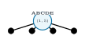
Bold black enters a partition; labelled arrows leave it for its two subproblems.
Block 03 -- first root branch
Use A | BCDE. A returns immediately; BCDE is the remaining recursive call.
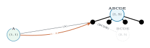
Block 04 -- enter BCDE
BCDE exposes three partitions. Begin with B | CDE.
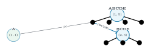
Block 05 -- enter CDE
For B | CDE, merge the base return from B and enter CDE.
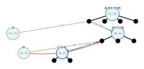
Block 06 -- candidate C(DE)
For C | DE, show the complete DE subtree directly. It returns 10:(DE), giving 25:C(DE).
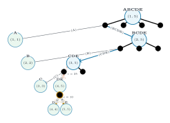
Block 07 -- candidate (CD)E
For CD | E, show the complete CD subtree directly. Compare 36:(CD)E with 25:C(DE); CDE returns 25:C(DE).
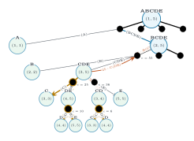
Block 08 -- candidate (BC)(DE)
The B | CDE candidate is 55:B(C(DE)). Next, direct BC and DE subtrees give 26:(BC)(DE).
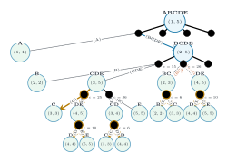
Block 09 -- enter BCD
For the final BCDE partition BCD | E, expand BCD before its base E call.
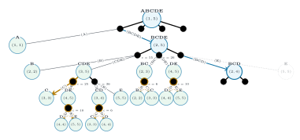
Block 10 -- candidate B(CD)
Inside BCD, the B | CD branch completes directly and returns 18:B(CD).
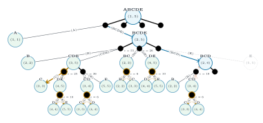
Block 11 -- choose (BC)D
The BC | D branch returns 10:(BC)D, beating 18:B(CD). Thus BCD returns 10:(BC)D.
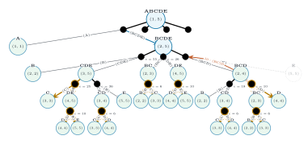
Block 12 -- finish root branch 1
BCD | E costs 30:((BC)D)E. BCDE chooses 26:(BC)(DE), so A | BCDE returns the root candidate 66:A((BC)(DE)).
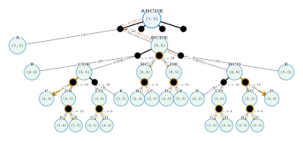
The entire naive subtree beneath root partition k=1 is now visible.
Block 13 -- begin root branch 3
Root branches 1 and 2 are collapsed into one cloud. Activate ABC | DE and enter ABC.
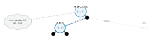
Block 14 -- candidate A(BC)
In ABC, merge A with the complete BC subtree. The first candidate is 14:A(BC).
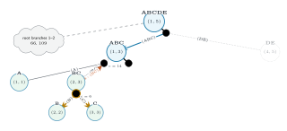
Block 15 -- choose A(BC)
The AB | C candidate is 36:(AB)C. ABC therefore returns 14:A(BC).
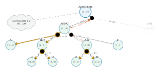
Block 16 -- finish root branch 3
Show DE directly: it returns 10:(DE). Combining 14:A(BC) and 10:(DE) gives the root candidate 44:(A(BC))(DE).
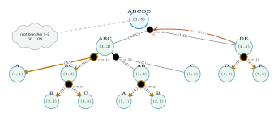
Root branch k=3 beats the previously summarized candidates 66 and 109.
Complete naive recursion tree
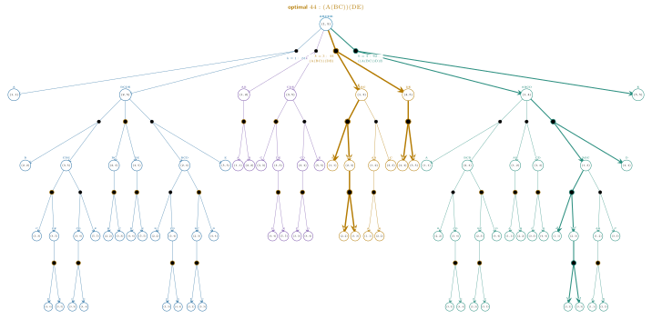
81 call occurrences and 40 partition nodes. Blue: (66); purple: (109); gold: (44, optimal); teal: (62). Bold gold: . Bold teal: . Repeated circles are distinct calls; a partition requires both child branches.
DP Block 01 -- bottom-up code
The table stores cost and ordering. Code indices are zero-based; diagram interval labels are one-based.
from math import inf
DIMS = [4, 2, 3, 1, 2, 5]
N = len(DIMS) - 1
NAME = "ABCDE"
cost = [[inf] * N for _ in range(N)]
order = [[""] * N for _ in range(N)]
# Base cases: a single matrix costs nothing.
for i in range(N):
cost[i][i] = 0
order[i][i] = NAME[i]
# Fill successive diagonals: chain lengths 2, 3, ..., N.
for length in range(2, N + 1):
for i in range(N - length + 1):
j = i + length - 1
# Choices: place the final multiplication after k.
for k in range(i, j):
multiply = DIMS[i] * DIMS[k + 1] * DIMS[j + 1]
candidate = cost[i][k] + cost[k + 1][j] + multiply
if candidate < cost[i][j]:
cost[i][j] = candidate
left = order[i][k] if i == k else f"({order[i][k]})"
right = order[k + 1][j] if k + 1 == j else f"({order[k + 1][j]})"
order[i][j] = left + right
print(cost[0][N - 1], order[0][N - 1])
# 44 (A(BC))(DE)Increasing chain length makes both child intervals available before each update: time, space.
DP Block 02 -- initialize the base diagonal
Set every one-matrix subproblem M[i,i] to 0. Gray cells are invalid because i > j.
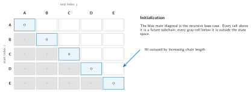
The remaining upper-triangular cells are filled diagonal by diagonal.
DP Block 03 -- update AB
The first length-2 cell has one partition. Its two base cells are already available.
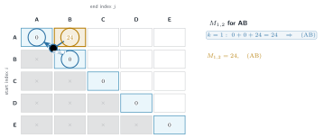
DP Block 04 -- update BC
Move one cell down the same diagonal. Again there is exactly one partition.
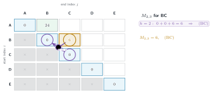
DP Block 05 -- complete the length-2 diagonal
All adjacent pairs are final. The focused CD cell retains its one hyperedge.
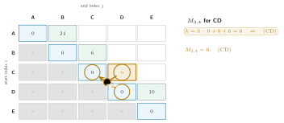
Each black dot joins the two child cells used by one partition choice.
DP Block 06 -- update ABC
A length-3 cell compares two partitions. Color identifies k; heavier lines mark the local optimum.
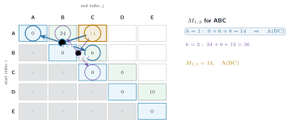
DP Block 07 -- complete the length-3 diagonal
Both earlier diagonals are complete. CDE now exposes its two one-level dependencies.
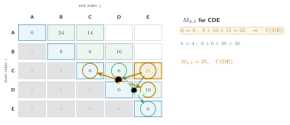
The displayed ordering belongs to the heavier candidate; every alternative retains its k color.
DP Block 08 -- update ABCD
The first length-4 cell compares three partitions using completed shorter subchains.
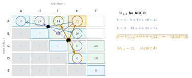
DP Block 09 -- complete the length-4 diagonal
BCDE compares its three one-level partitions. The middle split, BC | DE, wins.
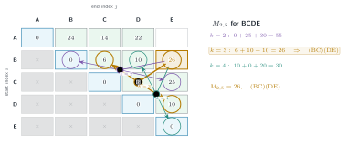
DP Block 10 -- finish the root cell
The final table is complete. ABC | DE is the best of the root's four partitions.
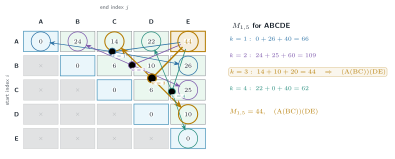
Final answer: cost 44 with ordering (A(BC))(DE).